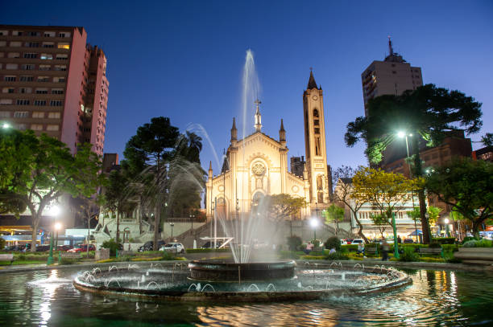
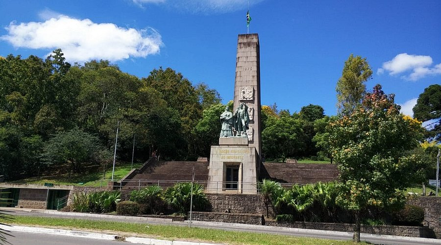
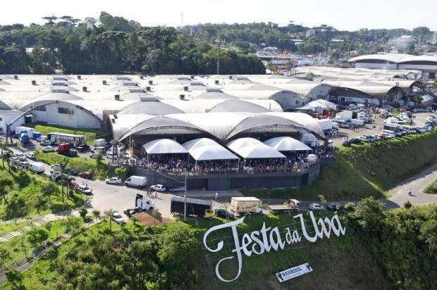
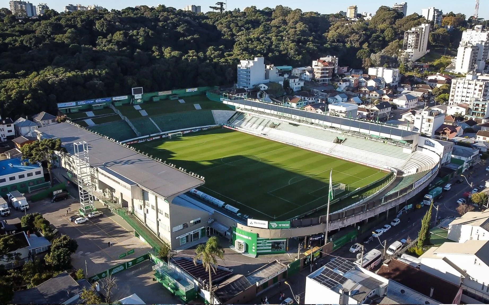

Descubra Caxias do Sul
Explore os principais pontos turísticos, eventos culturais e experiências da Serra Gaúcha.
Atrações em Destaque

Monumento ao Imigrante
Um dos principais marcos históricos de Caxias do Sul
Casa de Pedra
Símbolo da imigração italiana na região.

Parque da Festa da Uva
Local de grandes eventos culturais da cidade.

Estádio Alfredo Jaconi
Casa do Juventude e ponto turístico esportivo.